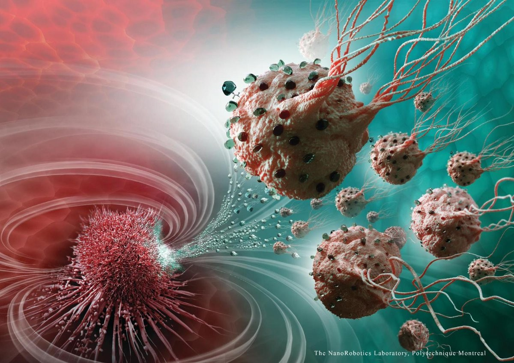

Definisi
Brokoli (Brassica oleracea L. Kelompok Italica) adalah tanaman yang sering dibudidayakan sebagai sayur. Brokoli adalah kultivar dari spesies yang sama dengan kubis dan kembang kol, yaitu Brassica oleracea. Brokoli berasal dari daerah Laut Tengah dan sudah sejak masa Yunani Kuno dibudidayakan. Sayuran ini masuk ke Indonesia belum lama (sekitar 1970-an) dan kini cukup populer sebagai bahan pangan.
Sebagai makanan, brokoli biasanya direbus atau dikukus, atau dapat pula dimakan mentah. Cara terbaik dalam mengolah brokoli adalah dengan cara dikukus. Hal ini bertujuan agar segala vitamin dan nutrisi penting di dalamnya tidak hilang selama proses pemasakan. Merebus brokoli akan menghilangkan sekitar 50 % asam folat yang terkandung di dalamnya. Oleh karena itu, jika ingin mengolah brokoli dengan cara direbus, sebaiknya brokoli tidak direbus terlalu lama, kira-kira tidak lebih dari 5 menit. Brokoli mengandung vitamin C dan serat makanan dalam jumlah banyak. Brokoli juga mengandung senyawa glukorafanin, yang merupakan bentuk alami senyawa antikanker sulforafana (sulforaphane). Selain itu, brokoli mengandung senyawaan isotiosianat yang, sebagaimana sulforafana, ditengarai memiliki aktivitas antikanker.
Manfaat
Brokoli mentah mengandung hampir 90 persen air, 7 persen karbohidrat, 3 persen protein, dan hampir tidak mengandung lemak. Setiap porsi juga mengandung sedikit potasium, magnesium, zat besi, dan kalsium.
Mencegah kanker

Konsumsi jenis sayuran ini dapat menurunkan risiko banyak kanker. Termasuk kanker paru-paru, kolorektal, payudara, prostat, pankreas, dan perut. Senyawa sulforaphane pada brokoli bertindak melawan pembentukan kanker pada tingkat molekuler dengan mengurangi stres oksidatif.
Menjaga kesehatan mata
Dua dari karotenoid utama dalam brokoli, lutein dan zeaxanthin, dikaitkan dengan penurunan risiko degenerasi makula terkait usia. Selain itu, brokoli mengandung beta karoten, yang diubah tubuh menjadi vitamin A. Ini membuat mengonsumsinya secara teratur dapat menjaga kesehatan mata.
Baik untuk jantung
Menurut jurnal ilmiah berjudul Steam cooking significantly improves in vitro bile acid binding of collard greens, kale, mustard greens, broccoli, green bell pepper, and cabbage yang dipublikasikan di Nutrition Research, menyebutkan konsumsi brokoli kukus secara teratur dapat menurunkan risiko penyakit kardiovaskular.
Proses mengukus dapat membantu nutrisi pada sayuran hijau ini tetap terjaga. Sehingga, senyawa yang bermanfaat untuk kesehatan dapat lebih maksimal bekerja untuk tubuh.
Jenis-Jenis Brokoli
Tahu enggak? Ternyata ada brokoli yang berwarna ungu, lo. Brokoli adalah salah satu sayuran yang menyehatkan dan banyak manfaatnya. Biasanya brokoli dimasak menjadi tumis atau tambahan pada sayur sop.
Brokoli Calabrese
Brokoli calabrese merupakan brokoli yang sering dijumpai di Indonesia. Jenis brokoli ini memiliki kepala bunga berwarna hijau tua dengan tangkap yang tebal.
Kepala bunganya bisa mencapai 10-20 cm, lo. Brokoli calabre dapat tumbuh dengan baik di beberapa jenis iklim sehingga dikenal produktif.
Brokoli ini bisa dipanen setelah 65 hari
Kailan

Kailan sering disebut juga sebagai brokoli China. Brokoli jenis ini memiliki rasa yang lebih manis.Berbeda dengan brokoli pada umumnya yang dimakan kepala bunganya, kalian justru dapat dimanfaatkan batang, daun serta kepala bunganya. Kailan biasanya dimasak dengan ditumis sebentar supaya warnanya tetap hijau.
Brokoli Raab
Brokoli raab atau rapini digunakan untuk masakan Belanda, Portugis, Italia, bahkan Tiongkok.
Ciri-cirinya memiliki kepala bunga yang lebih kecil dan memiliki daun yang mirip dengan daun lobak.
Brokoli ini bisa tumbuh setinggi 1-2 kaki dan kepala bunga mulai muncul. Pertumbuhannya cukup cepat dan mudah tumbuh diberbagai musim.
Brokoli Ungu
Berbeda dengan brokoli pada umumnya, brokoli ini memiliki kepala bunga berwarna ungu. Ukuran kepala bunga enggak sebesar brokoli calabrese.
Brokoli jenis ini bisa tumbuh dengan baik di daerah yang mendapatkan penyiaran matahari yang cukup dan enggak terlalu dingin.
Untuk masa tanamanya, bisa ditanaman selama tiga periode dalam satu tahun.
Fakta Unik Brokoli
Beberapa orang menyukainya, beberapa membencinya, dan beberapa sangat membencinya sehingga mereka mencoba dan melarangnya sama sekali. Ini semua tentang tentang brokoli!
Tanaman brokoli adalah keluarga jauh dari kubis yang masih satu keluarga Brassicaceae. Namun, pada brokoli, bagian utama yang dapat dimakan sebenarnya adalah tangkai dan bunganya, bukan daunnya (walaupun Anda juga bisa memakannya).
Jadi ada apa dengan brokoli, dan mengapa begitu kontroversial? Berikut 3 fakta menarik brokoli yang dikutip dari factsit.
Brokoli sangat dihargai oleh orang Romawi
Sejarah brokoli jauh lebih jauh dari yang kamu kira. Seperti banyak sayuran lain yang kita makan, brokoli dibudidayakan dari campuran tanaman yang berbeda dan kemudian dikembangbiakkan secara selektif untuk menjadi sayuran yang kita kenal sekarang.
Sejarah sayuran ini cukup panjang. Kembali ke Etruria, peradaban Italia kuno yang mendahului Kekaisaran Romawi. Orang Etruria membudidayakan sayuran sekitar abad ke-6 SM. Bangsa Romawi mengadopsi banyak aspek budaya Etruria, termasuk kecintaan mereka pada brokoli.
Inggris menyebutnya asparagus Italia
Seperti yang telah disebutkan sebelumnya, brokoli adalah bagian dari keluarga yang sama dengan kubis, keluarga besar yang mencakup kembang kol, kubis Brussel, kangkung, dan sawi.
Meskipun demikian, ketika sayuran pertama kali sampai ke Inggris, brokoli justru malah dikaitkan dengan asparagus.
George H. W. Bush melarang brokoli di Air Force One
Beberapa orang membenci brokoli, dan kemudian ada orang yang sangat membenci brokoli sehingga mereka secara terbuka menyatakan bahwa mereka tidak pernah ingin melihat sayuran itu lagi. Percaya atau tidak, pria itu adalah presiden Amerika Serikat ke-41, George H. W. Bush.
Saat dalam konferensi pers, Bush menyatakan,"Saya tidak suka brokoli, dan saya tidak menyukainya sejak saya masih kecil dan ibu saya menyuruh saya memakannya, dan saya presiden Amerika Serikat, dan saya tidak akan makan brokoli lagi.”
Dia membuat pernyataan ini ketika ditanya mengapa dia melarang sayuran di penerbangan Air Force One.
Support System

SPOTIFY

YouTube